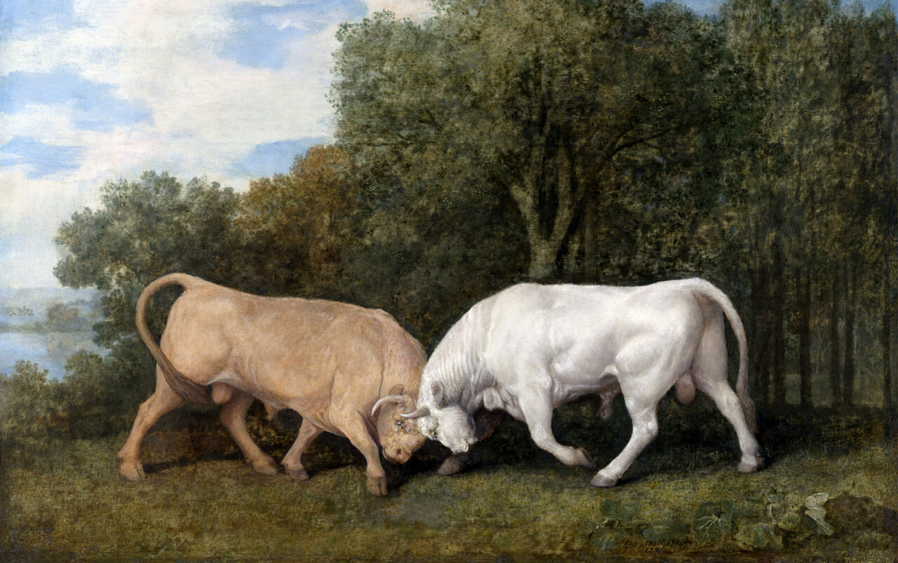

Logan C. Stevens
Incoming Ph.D. Student - University of Maryland, College Park

Incoming Ph.D. Student - University of Maryland, College Park
Hi! I am an incoming Ph.D. student in the Embodied Dynamics Laboratory (EmD) at the University of Maryland, College Park, advised by Dr. Jun Nishida. My research area is at the intersection of human-computer interaction (HCI), extended reality (XR), learning science, and psychophysics. Historically, my research has been in XR and education; studying how immersion in XR environments affects the learning process. Recently, I have been interested in factoring in HCI more broadly, as well as other cognitive effects during learning.
Officially joined the Embodied Dynamics Laboratory (EmD)!
I was honored to recieve the UMD Computer Science Department Award for Teaching Excellence 2023-2024 for my course CMSC388Y: History of Computer Science and Digital Technologies!
|  |
In Bad Faith: Assessing Good and Bad Faith Conversations on Social Media. J Golbeck†, L Stevens†, C Sherman†, R Gnanasekaran†, A Leitch†, B Zarrella†, C Stern†, E Cotugno†, W Conway†, E Klein†, K Hamilton†, C Chen† ACM Conference on Human Factors in Computing Systems (CHI), 2025 [Submitted] In this paper, replies to tweets from mainstream media outlets and official government agencies were analyzed and assessed for whether they were in good faith, engaging honestly and constructively with the original post, or bad faith, attacking the author or derailing the conversation. |

|
Sensitivity to Redirected Walking Considering Gaze, Posture, and Luminance. NL Williams, L Stevens, A Bera, D Manocha IEEE Conference on Virtual Reality and 3D User Interfaces (IEEE VR), 2025 [Submitted] We study the correlations between redirected walking (RDW) rotation gains and patterns in users’ posture and gaze data during locomotion in virtual reality (VR). Our results showed that, in general, physiological signals were significantly positively correlated with the strength of redirection gain, the duration of trials, and the trial number. Results showed that there were no significant differences in RDW detection thresholds between the photopic and mesopic luminance conditions. These results provide, for the first time, a direct link between the strength of RDW gains and properties of users’ gaze and posture data. |

|
An Overview of Enhancing Distance Learning Through Augmented and Virtual Reality Technologies. L Stevens*, E Childs*, F Mohammad*, H Burbelo, A Awoke, N Rewkowski, D Manocha IEEE Transactions on Visualization and Computer Graphics (TVCG), Volume 30, Issue 8 | Pages 4480 - 4496, 2023 IEEE Conference on Virtual Reality and 3D User Interfaces (IEEE VR), 2024 [Paper] [arXiv] [IEEE TVCG Link] [DOI] Although distance learning presents a number of interesting educational advantages as compared to in-person instruction, it is not without its downsides. We first assess the educational challenges presented by distance learning as a whole and identify challenges that distance learning currently presents as compared to in-person instruction. After assessing each of these challenges in-depth, we examine how AR & VR technologies might serve to address each challenge along with their current shortcomings, and finally outline the further research that is required to fully understand the potential of AR & VR technologies as they apply to distance learning. |

|
Artificial Intelligence and the Arts: Towards AI-Guided Accessible Learning Spaces in Virtual Reality. L Stevens, LA Weissman, J Steigelman, M Bouabid 7th Annual Brown University CS Undergraduate Research Symposium, 2022 [Research Award] [Poster] [Demo Video] As a member of the Google exploreCSR Program, an initiative to cultivate research on socially-responsible artificial intelligence (AI) for computational creativity, I investigated how AI could be used to improve accessibility in learning environments. Our project found that the cloud-based systems trained on the general image dataset produced captions of inconsistent quality in an unsatisfactory amount of time for general use. However, we provided a proof of concept and recommendations to future researchers in this area such as the utilization of a more specialized dataset, locally-ran AI models, and new XR accessibility tools. |
Ever since I was an instructional design intern at UMD's Office of Transformational Learning, I have been captivated by the task of applying a formalized structure to the learning process. I employ the skills I have learned during that internship in my teaching, scholarship, research, and daily life.
[body]
I am a trained stage actor and have performed in and worked on many productions and performance art projects during my B.A. in Theatre from the University of Maryland, College Park School of Theatre, Dance, and Performance Studies (TDPS).
E-Mail: lsteven7 at umd dot edu